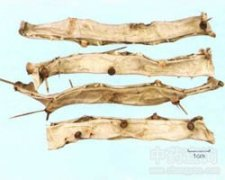

仙人掌

拼音
Xiān Rén Zhǎnɡ
别名
仙巴掌、霸王树、火焰、火掌、玉芙蓉
来源
为仙人掌科仙人掌属植物仙人掌Opuntia dillenii （Ker-Gawl.）Haw.，以全株入药。四季可采。鲜用或切片晒干。
生境分布
野生或栽培。分布云南、四川、贵州、广东、广西、福建等地。
药材特点
灌木，高1～3米。茎下部稍木质，近圆柱形，上部肉质，扁平，绿色，具节；每节卵形至矩圆形，长15～30厘米，光亮，散生多数瘤体，每一小瘤体上密生黄褐色卷曲的柔毛，并有利刺。叶肉质细小，披针形，先端尖细，紫红色，基部绿色，生于每个小瘤体的刺束之下，早落。花黄色，径达7～8厘米，单生或数朵丛生于扁化茎顶部边缘；雄蕊多数，数轮排列，花药2室；雌蕊1，花柱白色，圆柱形，通常中空，柱头6裂。浆果，肉质，卵圆形，长5～7厘米，紫红色，被细硬毛；种子多数。 以上植物的花（神仙掌花）、果实（仙掌子），以及肉质茎的浆汁凝结物（玉芙蓉），亦供药用，各详专条。
性状
无性状数据
性味
苦，凉。
功能主治
清热解毒，散瘀消肿，健胃止痛，镇咳。用于胃、十二指肠溃疡，急性痢疾，咳嗽；外用治流行性腮腺炎，乳腺炎，痈疖肿毒，蛇咬伤，烧烫伤。
用法用量
鲜品1～2两；外用鲜品适量，去刺捣烂敷患处。
化学成分
茎、叶含三萜、苹果酸、琥珀酸。灰分中含24％碳酸钾。
药理作用
1：用仙人掌全草的提出物进行细菌培养实验：对金黄色葡萄球菌抑制效果最显着，而且对此菌的18个抗青霉素系也有高度的抑制作用
2：另外对枯草杆菌也有高度抑制作用
3：仙人掌中所含墨斯卡灵有致幻作用
摘录
《全国中草药汇编》